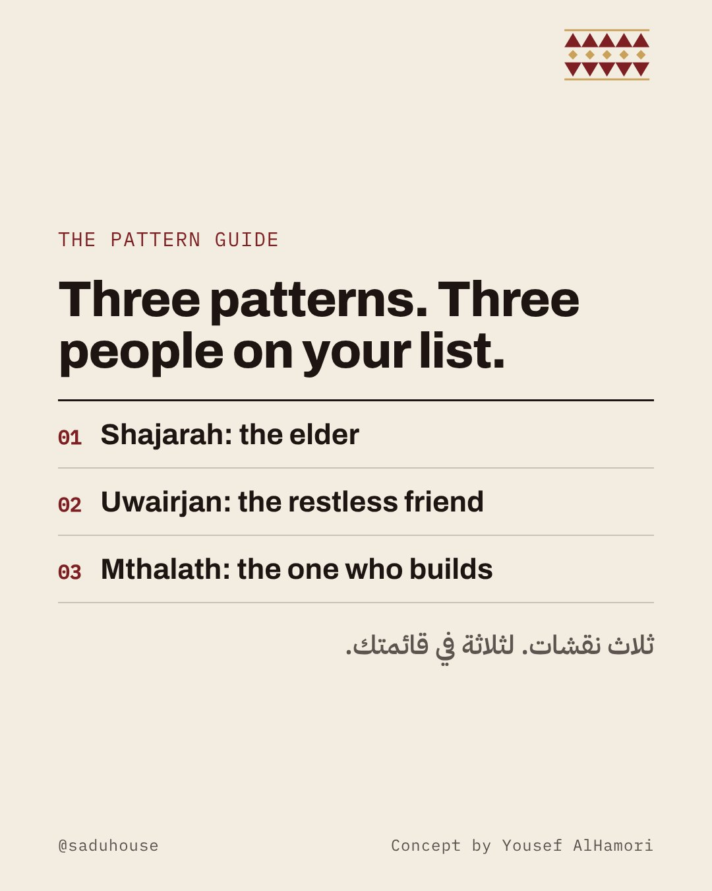
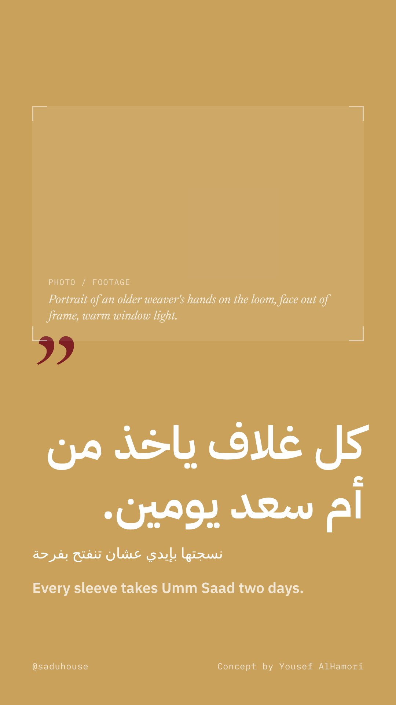
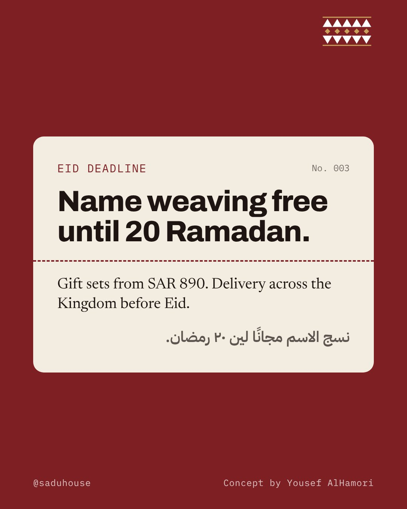

Stuck on your Ramadan gift list? Start with the person, not the scent. Save this for your next visit to Tahlia. #هدية_بنقشة #SaduHouse #عود
Pattern Guide pillar: makes choosing easier and drives saves before the gifting peak.
Sadu House turns each weave pattern into a gifting guide, matching scents to the people you love.
Sadu House has beautiful bottles and a real heritage story, but scent is invisible on a screen. This concept uses the Sadu patterns themselves as the visual language, so each pattern stands for a kind of person you gift. It gives Ramadan and Eid buyers a simple way to choose and a reason to film the unwrapping.
Sadu House is a fictional brand I invented for this exercise. Names, prices and situations are made up; the research findings are real.
Three posts from the campaign, each with the caption as it would go out and the job it does. In production the framed areas become real photography or footage.



What the brand already does well on social, and the openings this plan goes after.
Grow Ramadan and Eid gift set revenue by 40% versus last year, with 25% of online orders tracked to social links.
Women aged 28 to 50 who build a gift list every Ramadan for mothers, in laws, aunts and close friends.
The hardest part of gifting oud is not the price, it is the fear of choosing a scent the other person will not like.
Grow Ramadan and Eid gift set revenue by 40% versus last year, with 25% of online orders tracked to social links.
One pattern, one person, one scent: who to gift Shajarah, Uwairjan or Mthalath, with the notes explained simply.
Slow footage of weavers making the sleeves and the perfumer blending, with sound only.
Customers and family members opening the gift, shared with permission.
Opening hours, engraving deadlines, delivery cutoffs for Eid.
| Platform | Role | Cadence |
|---|---|---|
| Main showroom: Pattern Guide carousels, loom Reels and gift guides. | 3 Reels and 2 carousels per week | |
| Snapchat | Reaches gift buyers with Ramadan night offers and boutique moments. | Daily snaps in Ramadan |
| TikTok | ASMR unwrapping and weaving videos that travel beyond followers. | 3 per week |
Ramadan through Eid al Fitr 2027, the peak gifting window, with Founding Day on 22 February falling inside it.
In Sadu weaving every pattern carries a meaning, so Sadu House assigns each one to a person in your life: Shajarah for the elder who holds the family, Uwairjan for the friend who keeps you moving. Buyers stop guessing scents and start choosing people.
How it spreadsA three question story quiz about the person you are gifting returns their pattern and scent, with a link to the set. Orders placed before 20 Ramadan get the recipient's name woven into the sleeve for free.
| Time | Visual | Audio / text |
|---|---|---|
| 0 to 4s | Extreme close up: red and cream threads crossing on a ground loom, a hand pressing the weft down. | Sound: wood on thread, soft and rhythmic |
| 4 to 9s | The tree pattern appears line by line as the weave grows. | VO (formal Arabic, woman's voice): هذي الشجرة. نقشة اللي تجمع العيلة. |
| 9 to 14s | Cut to a Jeddah home before iftar: a grandmother laughing with grandchildren around her. | VO: كل بيت فيه شجرة. |
| 14 to 20s | A daughter hands her the gift. The woven sleeve with her name in thread slides off the box. | Sound: fabric slide, box opening |
| 20 to 25s | Grandmother touches the pattern, recognizes it, smiles and holds the bottle to her wrist. | VO: اهدِ النقشة اللي تشبه صاحبها. |
| 25 to 30s | Three sleeves side by side: Shajarah, Uwairjan, Mthalath, on the boutique's wooden counter. | On screen: هدية بنقشة. Name weaving free until 20 Ramadan. |
A two week calendar, the creators I would brief, and how the account answers people in the comments.
| Day | Platform | Format | Pillar | Post |
|---|---|---|---|---|
| W1 Sun | Reel | At the Loom | Launch: Who Is Your Shajarah? | |
| W1 Mon | Stories | The Pattern Guide | Three question pattern quiz | |
| W1 Tue | TikTok | Video | At the Loom | 60 seconds of weaving sound, no music |
| W1 Wed | Carousel | The Pattern Guide | Uwairjan: notes, mood, who to gift | |
| W1 Thu | Snapchat | Snaps | Boutique Notes | Late Ramadan boutique hours after taraweeh |
| W2 Sun | TikTok | Video | The Unwrapping | ASMR sleeve slide and first spray |
| W2 Mon | Reel | At the Loom | Perfumer explains Mthalath in 20s | |
| W2 Tue | Carousel | The Pattern Guide | Founding Day edit: patterns and their regions | |
| W2 Wed | Snapchat | Snaps | Boutique Notes | Countdown: 5 days to name weaving cutoff |
| W2 Thu | Reel | The Unwrapping | Customer reposts: families opening their gifts |
| Tier | Creator type | Why them | The ask |
|---|---|---|---|
| Mid (50k to 150k) | Local lifestyle creators who share family Ramadan gatherings | Their audience builds gift lists from what they see in these homes. | One Reel gifting a pattern to a family member with the quiz link |
| Micro (10k to 50k) | Fragrance reviewers who explain notes in Arabic | They answer the scent fear directly and are trusted on oud. | A review of all three scents mapped to people, plus a story Q and A |
| Micro (10k to 50k) | Saudi heritage and craft storytellers | They give the weavers' story depth and credibility. | A visit to the loom with a short documentary style Reel |
Proposed targets and the tests that would tell us what to change after week one.
| Metric | Target | Why it matters |
|---|---|---|
| Gift set revenue | Target: plus 40% versus last Ramadan | The main business result the campaign is meant to drive. |
| Quiz completions | Target: 5,000 completed pattern quizzes | Shows the guide is removing the fear of choosing. |
| Orders from social links | Target: 25% of online orders | Proves social is driving sales and not only awareness. |
| Saves on Pattern Guide posts | Target: 4% of reach | Gift buyers save guides and come back closer to Eid. |
Each major choice in this plan, matched to published research. Some studies cover the wider region or global audiences; the source says which. Full list on the research page.
60% of shoppers in Saudi Arabia agree that personalized product and gift suggestions make Ramadan shopping easier.
Most shoppers in Saudi Arabia say personalized gift suggestions make Ramadan shopping easier, which is exactly what the quiz does.
Arab News, Meta study reveals Saudi, UAE Ramadan shopping insights, 202373% of adults surveyed in the UAE and Saudi Arabia shop for gifting during Ramadan, and 72% spend more than they intended.
Gifting is one of the main reasons people shop in Ramadan, so this is when a gift led oud brand should spend most of its effort.
Ipsos, TikTok Ramadan and Eid Study (1,600 adults in UAE and KSA), 202680% of people trust the brands they use, and 73% say their trust in a brand would increase if it authentically reflected today's culture.
Showing Saudi craft reflects the culture the buyer lives in, which this finding links to greater trust in a brand.
Edelman, 2025 Edelman Trust Barometer Special Report: Brand Trust, From We to Me, 2025Snapchat ads reached 25.3 million users in Saudi Arabia in late 2025.
Snapchat reaches about 25 million users in Saudi Arabia, so daily snaps keep gift deadlines in front of women building their list.
DataReportal, Digital 2026: Saudi Arabia, 2025Does a three question gift quiz raise Ramadan gift set orders compared with a standard product carousel?
3 week A/B test on Instagram Stories: The Pattern Gift quiz versus a product carousel, both linking to the gift set page
About 20,000 story viewers split evenly, link clicks and orders per variant
Quiz viewers convert to orders at least 25% more than carousel viewers, with 5,000 completed quizzes